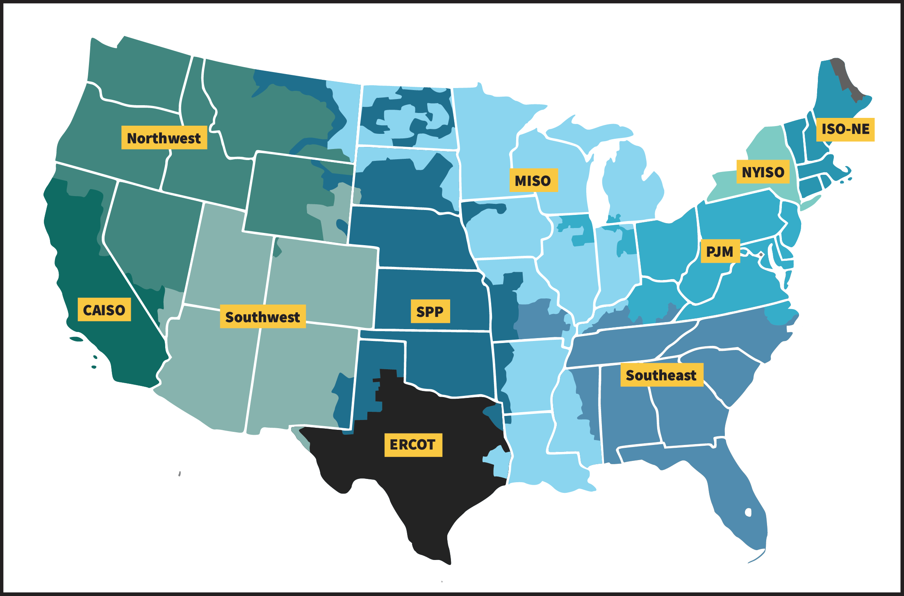

| Name | Generation Capacity (GW) | Covers | Rank |
|---|---|---|---|
| Northern Chinese State Grid | 1,700 | Northern China | #1 |
| Continental Europe | 859 | 24 European countries | #2 |
| Eastern Interconnection | 610 | Eastern US | #3 |
| Western Interconnection | 265 | Western US | #7 |
| Texas Interconnection | 140 | Texas | #13 |
| Quebec Interconnection | 42 | Quebec | #15 |
My Notes on North America Power Grid – Organization Structure, Regulated and Deregulated Electricity Markets, and RTOs and ISOs
Power System
Power Grid
NERC
WECC
ERCOT
CAISO
This blog gives brief information on FERC, NERC, REs, RTOs, ISOs, WECC, ERCOT, and CAISO.
Modeling and Simulation of Power System
After major disturbance
Organization Structure of the US Electrical Grid
There are currently six regional entities (RE) in the North American transmission system enforcing reliability standards. The Western Electricity Coordinating Council (WECC), the Midcontinent Independent System Operator (MISO), the Electric Reliability Council of Texas (ERCOT), the Northeast Power Coordinating Council (NPCC), the ReliabilityFirst Corporation (RF), and the SERC Reliability Corporation (SERC). The six REs are under the authority of the North American Electric Reliability Corporation (NERC), which is a non-profit international regulatory authority that assures the reliability of the bulk power system in North America. NERC is certified by the Federal Energy Regulatory Commission (FERC). In the U.S.A., The FERC is an independent agency within the Department of Energy (DOE) that regulates the interstate transmission of electricity, natural gas, and oil. FERC also reviews proposals to build liquefied natural gas (LNG) terminals and interstate natural gas pipelines and licensing hydropower projects. Figure 1 shows the organizational structure of the North American electrical grid.
graph TD;
FERC-->NERC;
NERC-->WECC;
NERC-->MISO;
NERC-->TexasRE;
NERC-->NPCC;
NERC-->RF;
NERC-->SERC;
Regulated and Deregulated Electricity Markets
In the US, there are two types of electricity markets, regulated and deregulated. In a regulated electricity market in the US, state public utility commissions (PUCs) set the electricity rates and oversee utility rates and services. In a regulated electricity market, utilities own and operate all aspects of the electric system, including power generation, transmission and distribution systems, and customer meters. In deregulated markets, the price of electricity is determined by the market. Figure 2 shows the regulated and deregulated electricity markets in the US.
graph TD;
Regulated-->|Government|Price;
Deregulated-->|Market|Price;
There are 17 States and the District of Columbia that have deregulated electricity markets.
ISOs and RTOs
ISOs and RTOs are independent, non-profit organizations that ensure the reliability of the grid and operate wholesale electricity markets. ISOs and RTOs are regulated by the Federal Energy Regulatory Commission (FERC). ISOs were set according to FERC Order No. 888 and No. 889. Order No. 2000 was issued to encourage the formation of RTOs. ISOs and RTOs are similar in that they both operate wholesale electricity markets and ensure the reliability of the grid. The main difference between ISOs and RTOs is that RTOs are responsible for the operation of the transmission system, while ISOs are not. Figure 3 shows the ISOs and RTOs in the U.S.A. You can find more information about ISOs and RTOs on this page.
